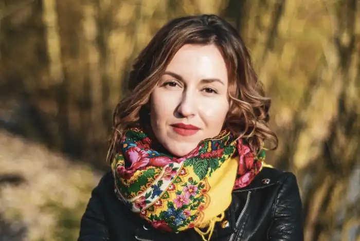

Народилася в м. Збараж Тернопільської області в сім'ї вчителів. Росла в Тернополі, де закінчила класичну гімназію та гуманітарний ліцей. Писати вірші почала рано, в 7 років. Працювати перекладачем місіонерської групи – у 13.
Через три роки закінчила ліцей, поступила в університет і почала працювати журналісткою-фрілансером. У 2010-му році отримала диплом Київського національного лінгвістичного університету за спеціальністю "Англійська мова та література".
Усними перекладами займалася з тринадцяти років. Перший перекладацький досвід здобула в американській місіонерській групі"Helping Hands". У 16 років почала дописувати в місцеві та всеукраїнські газети та журнали, а з 17-ти років працювала журналісткою в регіональному журналі. У 18 років вийшла заміж за Ігоря Гербіша й переїхала до Збаража. Тоді ж влаштувалася в київське видавництво "Брайт Стар Паблішинг" позаштатним книжковим перекладачем, де й перевела першу книгу – Роберта Кіосакі "Бідний тато, багатий тато" – на українську мову. Після цього працювала журналісткою в обласній газеті, перекладачкою, телеведучої, прес-секретарем, фотографом, головним редактором газети "Відповідь", пізніше – у видавництві "Ездра". Далі – робота штатним оглядачем в тернопільській обласній газеті "Вільне життя плюс" і позаштатним кореспондентом у київських газетах. Статті, нариси, оповідання та вірші друкувалися в багатьох газетах, журналах, дайджестах, на Інтернет-порталах. Чимало з них здобували перемоги в літературних конкурсах – зокрема, перемога в конкурсі "Різдвяне диво" 2009-го року в номінації "Мала проза (твори для дітей 5-8 років)" стала початком активної творчості на ниві української дитячої літератури. Надія починає писати для дітей, дещо з написаного потрапляє у книжки. Улюблена дитяча антологія – "Різдвяна чудасія". (В-во "Братське). У 2008-му році стала членом Національної спілки журналістів України. Почала працювати в ГО "Відповідь" у місті Тернопіль прес-секретаркою, головною редакторкою незалежної соціальної газети "Відповідь", авторкою і ведучою документальної телепрограми соціального спрямування "Відповідь". Написала соціальну програму розвитку підлітка "Зміни своє життя" (згодом перейменовану у "Навчіть мене мріяти") й викладала її в Збаразькому ПТУ-25 впродовж трьох років, а також викладала окремі лекції з цієї програми в різних навчальних закладах м. Збаража та м. Тернополя. З грудня 2009-го року почала працювати книжковою перекладачкою і письменницею у видавництві "Ездра" (м. Олександрія), а вже з серпня 2010-го року стала головною редакторкою цього видавництва. Тоді ж виходить кілька антологій та аудіо-книжок з творами Надії Гербіш у різних видавництвах. У січні 2011-го року на електронні книжкові полиці лягає повість "Художниця". Також працювала усним перекладачем Тоні Ентоні (триразового чемпіона світу з кунг-фу, колишнього елітного охоронця та автора книжок "Приборкання тигра", "Крик тигра", "Пристрасть") у його авторських турах Україною та США. Була супроводжуючим перекладачем директора в-ва "Ездра" Андрія Кравченка в Україні, Європі та Сполучених Штатах. Перекладала переговори видавців та членів видавничих асоціацій з різних країн під час міжнародних видавничих з'їздів Marketsquare Europe, численні бізнес-семінари, книжкові презентації тощо. У зв'язку з поверненням із Олександрії на Тернопільщину пішла з посади головної редакторки в-ва "Ездра" (у квітні 2011-го) й продовжувала працювати там проектно як позаштатний працівник. З квітня 2011-го року знову почала працювати книжковим перекладачем у в-ві "Брайт Стар Паблішинг". Фотографії авторства Надії Гербіш часто з'являються в різноманітних журналах, книжках, а в 2011-му році двічі ставали обкладинками книжок – "Found Firstborn #3" Karen Kindsbury та "More Letters of Hope" Janice Vegh, котрі вийшли в американському та канадському видавництвах. ("Found Firstborn #3" Karen Kindsbury є бестселером за версією New York Times ). Із вересня 2012 року пані Надія починає викладати на спеціальності "Видавнича справа та редагування" в одному з тернопільських вузів. 15 вересня 2012 року вийшла книжка Надійки Гербіш "Теплі історії до кави", яка стала бестселером на Львівському форумі видавців, а згодом здобула перше місце в рейтингу "Топ-20" мережі Книгарень "Є". На з'їзді видавців Marketsquare Europe, який відбувався в Будапешті в жовтні 2012-го, книжка одержує нагороду "European Christian Book of the Year". Свою роботу Надійка Гербіш вважає оплачуваним хобі, але й крім неї має чимало улюблених справ: займається музикою та фотографією (була нагороджена дипломами за участь у фото-виставках), пише дитячі вірші та дорослу прозу, є активною блоґґеркою і мандрівницею. Разом із чоловіком служить у церкві, займається соціальною роботою. Її неофіційне творче прізвисько – Фея Радості. 2013 року Надійка стала однією з переможниць конкурсу "Жінка року" від "РІА плюс". 3 2015 року почесна членкиня журі Літературного конкурс ім. Джона Буньяна, разом з Юрієм Вавринюком та Богданом Галюком. У 2017 році Надійка Гербіш здобула другу вищу освіту на факультеті Міжнародних та політичних досліджень Лодзького університету як фахівчиня з американістики та мас-медіа, зосередившись на проблемі освітніх практик в інтеграції біженців. Надійка активно відстоює інтегративний підхід у публічних дискусіях в академічній, культурній та теологічній спільнотах України та за кордоном. З 2017 року фахівчиня з управління проєктами у сфері міжнародних прав американської компанії Riggins Rights Management для Європи та Нордичних країн. У 2018 стала випускницею Aspen Institute Kyiv. Книжки Надійки виходять у видавництвах України, Великобританії, США, Польщі, Туреччини та Вірменії. ‘A Ukrainian Christmas', написана у співавторстві з Ярославом Грицаком, вийде в листопаді 2022 р. у британському видавництві Sphere (імпринт видавничого гіганта Hachette) як подарункове видання, а також як аудіокнижка, начитана британською акторкою Juliet Stevenson. Ще до виходу книжка була відзначена журналом The Bookseller серед найкращих книжок за вибором редакції.